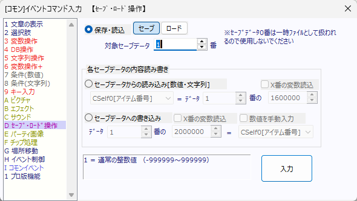

イベントコマンド 【セーブ・ロード操作】
データのセーブやロードに関する処理を行います。 セーブデータの一部だけ操作することも可能です。

【基本的な説明】
・並列実行されるイベント中で「ロード」を行うことは出来ません。エラーが出て処理が中断されますので注意して下さい。（強制終了する可能性があるため）
・「（セーブデータの）変数・文字列の読み込み」では「イベントのセルフ変数」や「XY配列」を読み込むことはできません。
【各機能の説明】
[保存・読込（セーブ/ロード）]
セーブデータを書き込んだり、読み込んだりするコマンドです。セーブデータのファイル名は、たとえばセーブデータ番号1番の場合は、
「Save/SaveData01.sav」
として保存されます。セーブデータ番号には変数（例：2000000[通常変数0番]など）を指定することができます。
なお読み込むセーブデータが存在しない場合は、そのまま次のイベントコマンドを実行します。セーブデータが存在する場合は、イベントを即中断してセーブされた状態からゲームを再開します。
[セーブデータからの読み込み (変数・文字列)]
指定したセーブデータから数値・文字列を読み込み、現在プレイしているゲームの変数へ代入します。なお、読み込むセーブデータが存在しない場合、変数なら0の値、文字列なら空白文字列が代入されます。
余談ですが、システム変数24番（9000024：[読]ｾｰﾌﾞﾃﾞｰﾀ読込判定）はそのセーブデータが存在する場合は必ず「1」を返す変数です、このコマンドでまずこのシステム変数を読み込めば、セーブデータの有無を確認することができます。
[セーブデータへの書き込み]
指定したセーブデータに変数・文字列だけ書き込みます。
※もしセーブファイルが存在しない場合は、新たにセーブファイルを作成します。ただしその場合、保存先には可変DBのタイプ情報、データは一切書き込まれませんのでご注意下さい。マニアックな部分ですが引っかかりポイントです。
→ もし可変DBの内容もセーブファイルに入れたい場合は最初に通常の「保存・読込」→「セーブ」を行ってください。
【使用例】
・「保存・読込」機能はセーブが必要なゲームでは必須です。
・「変数・文字列の読み込み」や「セーブデータへの書き込み」は、各々のセーブデータだけでは保存しきれない情報を別のファイルに保存するのに使えます。一例としては、「ゲーム全体のクリア回数を保存する」といった役割のデータを作成する際に便利です。
【特殊機能 保存ファイル名を文字列変数で指定】
各データ番号欄に文字列変数（3000000～）を指定すると、その文字列のデータ名でセーブデータが保存されます。たとえば文字列変数0番に「システム情報.sav」と代入してセーブデータ番号に3000000を入力して「セーブ」すると、Game.exeと同じフォルダに「システム情報.sav」というファイルが保存されるようになります。
「Save/システム.sav」なら「Save」フォルダの中に作られます。
※セキュリティ上の安全とWindowsのファイル仕様のため、保存先文字列に「//」「\\」「..」「./」「.\」「%」「:」「*」「?」「"」「<」「>」「|」が含まれているとファイル書き込みできません、ご注意ください(Ver3.00以降)。
【重要な点 ロード後はイベントが実行されてない状態から再開されます】
たとえイベントの途中でセーブしていた場合でも、セーブデータをロードした直後は「イベントが実行されていない状態」から再開されます。
つまり、ロード後に実行中だったイベントコマンドが途中から再開されたりはしませんので、注意してください。
変数操作の順番などを間違えると、「ボス戦イベント中にセーブしたデータをロードすると、イベントが終了した扱いになってて続きが何も起きない」といった失敗が起こったりします。
一方で、この仕様を利用すれば、「1回だけ処理してあとは無限にウェイトし続けるだけの並列イベント」などを作ることで、「ロードごと(または「リセット時」や「ゲーム開始時」)に1回だけ起動するイベント」を実現することが可能です。
【変数の読込・書込時のメモリキャッシュや、ファイル書き込みタイミングについて】
●セーブデータはメモリにキャッシュされています
「変数・文字列の読み込み」あるいは「セーブデータへの書き込み」を行ったセーブデータは、初回はSSD/HDDから読み込まれますが、そのデータはメモリ内にキャッシュされ、次以降はメモリから読み込まれます。そのため、2回目以降の処理は高速化されます。
ただし新たなセーブデータによってメモリのキャッシュがあふれそうになった場合は、自動的にメモリ内のセーブデータの全キャッシュが消去されます（次に開いたとき、そのセーブデータが再びSSD/HDDから読み直されるだけなので、処理上は特に問題ありません）。
●「セーブデータへの書き込み」がファイルに反映されるのはフレームの最後です
「セーブデータへの書き込み」処理を行った際、実際にその変更が反映されてセーブデータのファイルが保存され直すタイミングはそのフレーム（1/60秒）の最後です。
そのため、「セーブデータへの書き込み」は1フレーム中にまとめて1ファイルへの書き込みを行うのがおすすめです。何フレームにも分割して書き込むと、そのたびにファイルの保存し直しが発生してしまうからです。
●巨大なデータを含むセーブデータの場合、同時に複数のセーブにアクセスせずウェイトを入れてください。
膨大なデータ数の可変DBがあったり、巨大なXY配列が保存されているなどの「巨大なデータ」が保存されているセーブデータが複数ある場合、「セーブデータへの書き込み」で「1フレーム中に複数のセーブデータに書き込み」するとメモリがあふれてエラーが発生し、書き込み処理がキャンセルされる場合があります。
その場合は、なるべく「1フレーム中には1ファイルだけに書き込み」、処理後には「1フレームのウェイトを入れて」次のセーブデータへの書き込み処理を行うようにしてみてください。
ただ、1フレーム中に1つのセーブデータへの書き込みをするようにしても安定しない場合はありますので、どうしても安定しない場合は、ゲーム中には他のセーブデータにアクセスしないようにするなど仕様の調整もご検討ください。たとえば「セーブデータをロードしてゲームを始めた後は、そのプレイ内からは他のセーブデータにセーブ・ロードできないようにする」といった具合です。